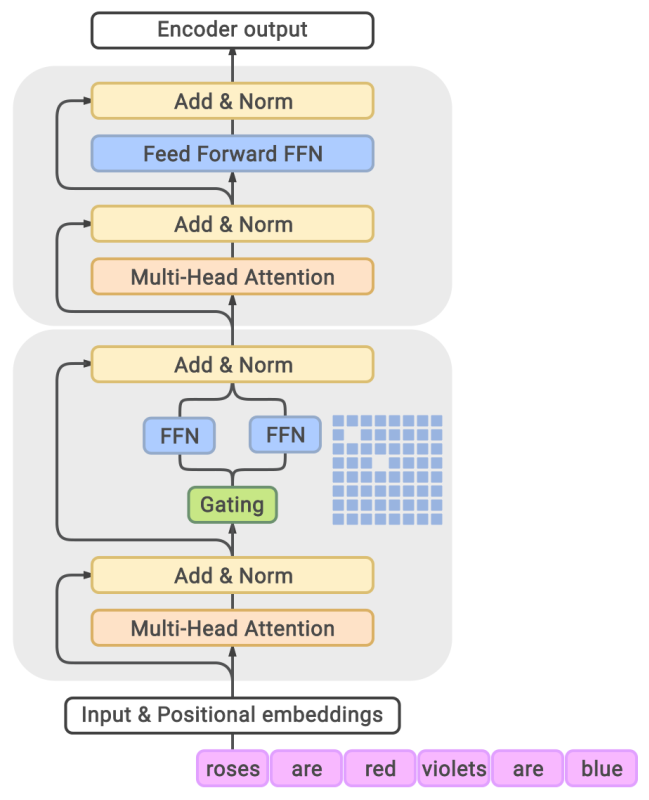
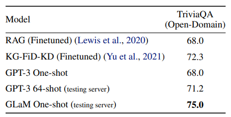
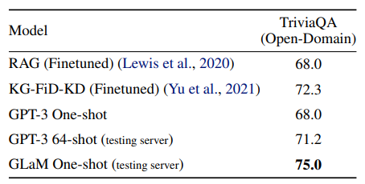
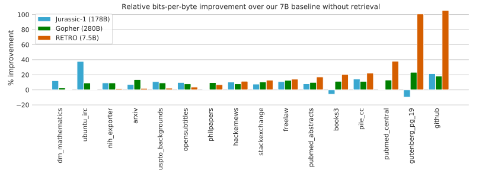

Recall from the modeling lecture that the core interface of a neural language model is an encoder that maps token sequences to contextual embeddings:
\[[\nl{the}, \nl{mouse}, \nl{ate}, \nl{the}, \nl{cheese}] \embed \left[\binom{1}{0.1}, \binom{0}{1}, \binom{1}{1}, \binom{1}{-0.1}, \binom{0}{-1} \right].\]GPT-3 is a neural language model that maps a token sequence \(x_{1:L}\) by stacking 96 layers of Transformer blocks:
\[\text{GPT-3}(x_{1:L}) = \TransformerBlock^{96}(\EmbedTokenWithPosition(x_{1:L})),\]where each Transformer block applies:
- a self-attention layer, which allows each token to talk to each other; and
- a feed-forward layer, which processes each token independently:
Previous lectures:
- These dense Transformer model architectures are currently the dominant paradigm for developing large language models.
- But scaling these models up is non-trivial, requiring data, model, and pipeline parallelism (see systems).
Current state of affairs:
- We are running in to the limits of how much more we can scale.
- As models get larger, they have to be split up across more machines, and network bandwidth becomes a bottleneck to training. Example of model parallelism:
- So we need to rethink how to architect large language models if we are to continue to scale up.
- For dense Transformers, each input uses the same (all) parameters of the language model (175B parameters for GPT-3).
- Instead, can we have each input use a different (and much smaller) subset of parameters?
In this lecture, we will explore two different types of “selective” architectures, which raises the ceiling of how big the models can get. In particular, we will discuss:
- Mixture-of-experts: We create a set of experts. Each input activates only a small subset of experts.
- Intuition: an advisory board of experts, each with different backgrounds (e.g., history, math, science, etc.).
- Retrieval: We have have a store of raw data. Given a new input, we retrieve the relevant parts of the store and use them to predict the output.
- Intuition: if someone asks you a question, you issue a web search, and read the resulting documents to produce the answer.
Mixture of experts
Basics. The idea of mixture of experts goes back to Jacobs et al. (1991).

To introduce the basic idea, suppose we are solving a prediction problem:
\[x \in \R^d \Rightarrow y \in \R^d.\]Let us start out by learning a feedforward (ReLU) neural network:
\[h_\theta(x) = W_2 \max(W_1 x, 0),\]where the parameters are \(\theta = (W_1, W_2)\).
- However, this function might not be powerful enough to represent the function of interest.
- We could make the neural network wider or deeper.
But the mixture-of-experts approach is to:
- Define \(E\) experts.
- Each expert \(e = 1, \dots, E\) has an embedding \(w_e \in \R^d\).
- Define the gating function as a probability distribution over the \(E\) experts:
- Each expert \(e = 1, \dots, E\) has parameters \(\theta^{(e)} = (W_1^{(e)}, W_2^{(e)})\).
- Define each expert function in terms of the expert-specific parameters:
- Define the final function as a mixture of the experts:
Example. Consider \(d = 2\) and each expert being a linear classifier (source): 
Training. We can learn a mixture-of-experts model by normal backpropagation. Applying the product rule yields:
\[\nabla f(x) = \sum_{e=1}^E g_e(x) (\nabla (\log g_e(x)) h_{\theta_e}(x) + \nabla h_{\theta_e}(x)).\]Notice that the gradient is proportional to \(g_e(x)\) and updates both the gating function and the experts.
Saving compute.
- Note the gating function \(g(x) = [g_1(x), \dots, g_E(x)]\) is non-zero for each expert. For example:
As written, the mixture of experts doesn’t save any compute, because a feedforward pass would still have to evaluate each expert, and the backward pass would also have to touch each expert.
- However, if we approximate the gating function \(g(x) = [g_1(x), \dots, g_E(x)]\) with \(\tilde g(x) = [\tilde g_1(x), \dots, \tilde g_E(x)]\) which places zero on most experts, then in the forward pass, we only have to evaluate the experts \(e\) with nonzero \(\tilde g_e(x)\) (for both the forward and the backward pass).
- For example, we might take top 2 experts and renormalize:
Balancing experts.
- Mixture of experts is only effective if all experts pitch in.
- If only one expert is active (e.g., \(g(x) = [0, 1, 0, 0]\)), then this is a waste.
- Furthermore, if we end up in this state, then the gradients for the unused experts will be zero, and therefore they will not receive any gradients and improve.
- Therefore, one of the main considerations in using mixture-of-experts is to ensure that all the experts are used across inputs.
Parallelism.
- The mixture-of-experts is very conducive to parallelization.
- Each expert can occupy a different machine.
- We compute the approximate gating function \(\tilde g(x)\) centrally.
- Then we ask only the (sparse) set of machines containing activated experts to process \(x\).
Sparsely-gated mixture of experts (Lepikhin et al. 2021)
- We now consider how the mixture-of-experts idea can be applied to language modeling.
- The naive solution would be to have a mixture of 96-layer Transformers, but
- the gating function would need to somehow need to apply to a sequence; and
- the combination of experts only happens superficially at the top.
- Therefore, we will apply the mixture-of-experts idea to:
- each token and
- each Transformer block (or every other one).
- Since the feed-forward layer is independent for each token, we turn each feed-forward network into a mixture-of-experts (MoE) feed-forward network:
- Every other Transformer block uses a MoE Transformer block.

We define the top-2 experts approximate gating function as follows:
- Compute the top expert: \(e_1 = \arg\max_e g_e(x)\).
- Compute the second expert: \(e_2 = \arg\max_{e \neq e_1} g_e(x)\).
- Always keep top expert and keep the second expert stochastically:
- Let \(p = \min(2 g_{e_2}(x), 1)\).
- With probability \(p\), set \(\tilde g_{e_1}(x) = \frac{g_{e_1}(x)}{g_{e_1}(x) + g_{e_2}(x)}\), \(\tilde g_{e_2}(x) = \frac{g_{e_2}(x)}{g_{e_1}(x) + g_{e_2}(x)}\), \(\tilde g_e(x) = 0\) for \(e \not\in \{ e_1, e_2 \}\).
- With probability \(1 - p\): \(\tilde g_{e_1}(x) = 1\), and \(\tilde g_e(x) = 0\) for \(e \neq e_1\).
Notation:
- Let \(B\) be the number of tokens in the batch (across all sequences); usually on the order of millions.
- Let \(E\) be the number of experts; usually on the order of thousands.
- Let \(x_1, \dots, x_B\) be the tokens in the batch.
Balancing experts.
- Let \(c_e = \sum_{i=1}^B \mathbf{1}[\tilde g_e(x_i) > 0]\) be the number of times expert \(e\) is selected.
- Note that after processing a batch, \(\sum_e c_e = B\).
- If all the experts were balanced, then \(c_e = \frac{B}{E}\).
- Overflow: If \(c_e > 2 \frac{B}{E}\), then set \(f(x) = x\) (bypass with residual connection), where \(2\) here is the capacity factor.
- Auxiliary loss: We would like to encourage \(c = [c_1, \dots, c_E]\) to close to uniform.
- We could penalize \(\|c\|_2^2 = \sum_{e=1}^E c_e^2\), but this is not differentiable.
- Define \(m_e = \sum_{i = 1}^B g_e(x_i)\) (this is the soft version of \(c_e\)).
- Instead, we add \(\text{load-balancing-loss} = \sum_{e=1}^E m_e c_e\) to the objective function. This way, the gradient will be nonzero through \(m_e\).
For example, we can take \(\lambda = \frac{0.01}{B}\).
Example. Here is an example with \(B = 2\) tokens and \(E = 4\) experts:
\[g(x_1) = [0.2, 0.6, 0.1, 0.1] \Rightarrow \tilde g(x_1) = [0.25, 0.75, 0, 0]\] \[g(x_2) = [0.1, 0.6, 0.2, 0.1] \Rightarrow \tilde g(x_2) = [0, 0.75, 0.25, 0]\]The counter would be:
\[c = [1, 2, 1, 0] \quad\quad\quad\quad m = [0.3, 1.2, 0.3, 0.2]\]We would try to push down on the gating function on expert 2 to discourage its use.
Switch Transformer (Fedus et al. 2021)
- Defines the approximate gating function \(\tilde g(x)\) to only be the top-1 expert (to get even more sparsity).
- Tricks:
- Does selective casting from FP32 to FP16
- Smaller parameters for initialization
- Expert dropout
- Expert parallelism
- Trained a 1.6 trillion parameter model
- Improved pre-training speed compared to T5-XXL (11 billion parameters) by 4x
Balanced Assignment of Sparse Experts (BASE) layers (Lewis et al., 2021)
- BASE defines the approximate gating function \(\tilde g(x)\) to be the result of a joint optimization over all the tokens in the batch.
- We will assign each token 1 expert, but load balancing is a constraint rather than a soft penalty.
- We define \(a = [a_1, \dots, a_B] \in \{1, \dots, E\}^B\) to be the joint assignment vector.
- This is a linear program that can be solved efficiently.
- In practice, we parallelize the linear program.
- At test time, just choose the top-1 expert.
Experimental setup:
- Sparsely gated MoE (top-2 experts): 52.5B parameters
- Switch Transformer (top-1 expert): 52.5B parameters
- BASE (1 jointly optimized expert): 44.4B parameters (1.3B shared parameters, 335M x 128 expert parameters)

BASE requires more compute to optimize the assignment \(a\), but is more stable.
Summary and next steps.
- Switch Transformer (Google) used top-1 expert.
- BASE (Facebook) used 1 expert per token, but jointly optimized.
- Neither of these competed with GPT-3. Since then, both Google and Facebook released two most recent high-performing MoE language models that do compete with GPT-3, but interestingly, they are still based on the original simple top-2 experts:
- GLaM from Google
- “FacebookMoE” from Facebook
Generalist Language Model (GLaM) (Du et al. 2021)
Specification:
- 1.2 trillion parameters (GPT-3 had 175 billion parameters)
- 64 experts (not that many), 64 layers, 32K hidden units
- Each token activates 95B (8% of 1.2T) of the parameters
Other upgrades:
- Created new dataset (GLaM dataset) of 1.6 trillion tokens of webpages, forums, books, news, etc.
- Relative positional embeddings, Gated linear units, GeLU activation function, RMSNorm (not LayerNorm)
- Skip weight updates / rollback to earlier checkpoint if encounter NaN/Inf.
- “With the above tricks carefully implemented, we observe that the training of sparsely activated models at all scales becomes quite stable.”
Results:
- 1/3 of the cost to train compared to GPT-3
- Evaluated on same benchmarks as GPT-3 (open-domain question answering, reading comprehension, SuperGLUE, etc.)
- Achieved better 0-shot and 1-shot performance compared to GPT-3 (especially performant on knowledge-intensive tasks)
- Note: they did not evaluate in the few-shot, where GPT-3 is stronger
 

Results on WinoGender:
- Example: The nurse notified the patient that {her/his,their} shift would be ending in an hour.
- GPT-3: 64.2%
- GLaM: 71.7%
- “he” examples: 70.8%
- “she” examples: 72.5%
- stereotypical examples: 71.7%
- anti-stereotypical (“gotcha”) examples: 71.7%
- GLaM has less gender bias (as measured by this benchmark).
FacebookMoE (Artetxe et al., 2021)
Setup:
- Trained a 1.1T parameter model
- 512 experts (more than GLaM), 32 layers, 4096 hidden units
- Trained on 112 billion tokens on webpages, forums, books, news, etc.
- Strong gains for smaller models, diminishing gains for larger models
Results on StereoSet:
- Example: The assistant went to work. {She brought her boss coffee., She was valued for her input.}
- Stereotype bias gets worse with increase model size (counterpoint to the GLaM results).

Decentralized mixture-of-experts (Ryabinin & Gusev, 2020)
Motivation:
- So far, the mixture-of-experts was motivated purely from a perspective of a central organization (e.g., Google or Facebook) scaling up a massive large language model.
- However, mixture-of-experts naturally suggests a much more radical decentralization.
- The Azure supercomputer cluster used to train GPT-3 costs $250 million.
- How can we harness the hundreds of millions of consumer PCs?
- Folding@Home is a volunteer computing project that leverages volunteers across the world to donate compute to do molecular dynamics simulations.
- In April 2020, Folding@Home had 700,000 people donate compute producing 2.43 exaFLOPs (GPT-3 requires 350 gigaFLOPs) (article).
- The main difference is that molecular dynamics simulations is compute-heavy and doesn’t require network bandwidth.
Main considerations:
- Many nodes (\(10^3 \sim 10^6\) heterogeneous PCs)
- Frequent node failures (5-20% have at least one failure/day)
- Home-Internet communication bandwidth (100Mbps; compared to 400Gbps for the Azure supercomputer)
Distributed hash tables:
- \(N\) nodes
- A single node needs to talk to \(O(\log N)\) other nodes
- Used Kademlia DHT protocol (used by BitTorrent and Ethereum)

Experiments from the paper:
- Top-4 experts (256 experts total)
- Each expert is a Transformer layer
- Trained a small Transformer LM on 4 GPUs
- 40 volunteers
- Trained an ALBERT-style masked language model for Bengali
- Training Transformers Together: anyone can join and contribute compute

Summary
- Mixture-of-experts: classic idea of applying different experts to different inputs
- Allows for training much larger language models (1.1 trillion parameters)
- Much more efficient per input (fewer FLOPs) than dense Transformer models
- Hard to compare Direct comparisons are still challenging at scale (GPT-3 versus GLaM versus FacebookMoE)
- Strong implications for decentralization
Retrieval-based models
We now turn to another class of language models, retrieval-based (or retrieval-augmented, memory-augmented models), that can help us push past the scaling ceiling of a dense Transformer.
Encoder-decoder. Let us first focus on sequence-to-sequence tasks using an encoder-decoder framework:
\[\text{input } x \quad\Rightarrow\quad \text{output } y\]Example (open-book question answering):
- Input \(x\): What is the capital of Canada?
- Output \(y\): Ottawa
Recall that BART and T5 are examples of encoder-decoder models:
\[p(y \mid x)\]that are trained on denoising objectives; for example:
- Input \(x\): Thank you
me to your party week. - Output \(y\):
for inviting last
Retrieval. Let us assume that we have a store \(S\), which is a set of sequences (usually, documents or passages).
\[S = \{ \nl{Why is the...}, \nl{Thanks for}, ..., \nl{The quick...}, \nl{Stanford...} \}.\]Intuitively, a retrieval-based model generates:
- Retrieve a relevant sequence(s) \(z\) based on input \(x\).
- Generate the output \(y\) given retrieved sequence(s) \(z\) and input \(x\).
Example (open-book question answering):
- Input \(x\): What is the capital of Canada?
- Retrieval \(z\): Ottawa is the capital city of Canada.
- Output \(y\): Ottawa
Nearest neighbors as a special case:
- \(S\) is the training set.
- Retrieve the \((x',y') \in S\) whose \(x'\) is most similar to \(x\).
- Generate \(y = y'\).
Retrieval-augmented generation (RAG) (Lewis et al., 2020)
Formally, the RAG-Sequence model is defined as follows:
\[p(y \mid x) = \sum_{z \in S} \underbrace{p(z \mid x)}_\text{retriever} \underbrace{p(y \mid z, x)}_\text{generator}.\]In practice, the summation \(z \in S\) is replaced by the top-k (analogous to choosing the top 1 or 2 experts for mixture of experts).
Retriever: Dense Passage Retrieval (DPR) (Karpukhin et al., 2020).
\[p(z \mid x) = \frac{\exp(\BERT_\text{d}(z) \cdot \BERT_\text{q}(x))}{\sum_{z' \in S} \exp(\BERT_\text{d}(z') \cdot \BERT_\text{q}(x))}.\]- Considers on passages of 100 words with title of Wikipedia article
- Trained on query, positive example, negative examples: \((q, p^+, p^-_1, \dots, p^-_n)\) from QA datasets (NaturalQuestions, TriviQA, etc.)
- Negative passages: random + passages retrieved using BM25 on \(q\) that don’t contain the answer
- Inference: uses FAISS (Facebook AI Similarity Search)
Generator.
\[p(y \mid z, x) = p(y \mid \text{concat}(z, x)).\]- Use BART-large (400M parameters) where input is retrieved passage \(z\) concatenated with input \(x\)
- Recall BART was trained on denoising objectives (e.g., masking) on web, news, books, stories
Training.
- Initialize with BART, DPR (initialized with BERT).
- Tune \(\text{BART}\) and \(\BERT_\text{q}\).
Experiments.
- Example of RAG-Token on Jeopardy question generation given input Hemingway:
- Outperforms non-retrieval methods:
 For comparison, GPT-3 (few-shot): NaturalQuestions (29.9%), WebQuestions (41.5%), TriviaQA (71.2%)
For comparison, GPT-3 (few-shot): NaturalQuestions (29.9%), WebQuestions (41.5%), TriviaQA (71.2%)
RETRO (Borgeaud et al., 2021)
- Retrieve based on chunks of 32 tokens
- Store: 2 trillion tokens
- 7 billion parameters (25 times fewer parameters than GPT-3)
- Use frozen BERT for retrieval (don’t update)
- Trained on MassiveText (same dataset used to train Gopher)
Results:
- Performs very well on language modeling
- NaturalQuestions accuracy: 45.5% (SOTA is 54.7%)

Discussion
- The retrieval-based models are highly geared towards knowledge-intensive, question answering tasks.
- Beyond scalability, retrieval-based models provide interpretability and ability to update the store.
- Unclear whether these models have the same general-purpose capabilities as a dense Transformer.
Summary
- In order to scale, need to go beyond dense Transformers.
- Mixture-of-experts and retrieval-based methods are more efficient.
- How to design the best, scalable architectures is still an open question.
Further reading
Mixture of experts:
- Outrageously Large Neural Networks: The Sparsely-Gated Mixture-of-Experts Layer. Noam M. Shazeer, Azalia Mirhoseini, Krzysztof Maziarz, Andy Davis, Quoc V. Le, Geoffrey E. Hinton, J. Dean. ICLR 2017. Trains 137 billion parameter model; mixture of experts (1000 experts) applied convolutionally between LSTM layers.
- GShard: Scaling Giant Models with Conditional Computation and Automatic Sharding. Dmitry Lepikhin, HyoukJoong Lee, Yuanzhong Xu, Dehao Chen, Orhan Firat, Yanping Huang, M. Krikun, Noam M. Shazeer, Z. Chen. ICLR 2020. Trains Transformer for neural machine translation (100 languages) with 600 billion parameters. Use top-2 experts.
- Switch Transformers: Scaling to Trillion Parameter Models with Simple and Efficient Sparsity. W. Fedus, Barret Zoph, Noam M. Shazeer. 2021. Trains language model, 4x speedup over T5-XXL (13 billion parameters). Use top-1 expert.
- GLaM: Efficient Scaling of Language Models with Mixture-of-Experts. Nan Du, Yanping Huang, Andrew M. Dai, Simon Tong, Dmitry Lepikhin, Yuanzhong Xu, M. Krikun, Yanqi Zhou, Adams Wei Yu, Orhan Firat, Barret Zoph, Liam Fedus, Maarten Bosma, Zongwei Zhou, Tao Wang, Yu Emma Wang, Kellie Webster, Marie Pellat, Kevin Robinson, K. Meier-Hellstern, Toju Duke, Lucas Dixon, Kun Zhang, Quoc V. Le, Yonghui Wu, Zhifeng Chen, Claire Cui. 2021. Trains 1.2 trillion parameter model, 64 experts. Use top-2 experts. Also creates new dataset.
- BASE Layers: Simplifying Training of Large, Sparse Models. M. Lewis, Shruti Bhosale, Tim Dettmers, Naman Goyal, Luke Zettlemoyer. ICML 2021. Solve optimization problem for token-to-expert allocation to balance allocation. Trains 110 billion parameter model.
- Efficient Large Scale Language Modeling with Mixtures of Experts. Mikel Artetxe, Shruti Bhosale, Naman Goyal, Todor Mihaylov, Myle Ott, Sam Shleifer, Xi Victoria Lin, Jingfei Du, Srinivasan Iyer, Ramakanth Pasunuru, Giridhar Anantharaman, Xian Li, Shuohui Chen, H. Akın, Mandeep Baines, Louis Martin, Xing Zhou, Punit Singh Koura, Brian O’Horo, Jeff Wang, Luke Zettlemoyer, Mona Diab, Zornitsa Kozareva, Ves Stoyanov. 2021. Trains 1.1 trillion parameter models. Use top-2 experts (512 experts).
- Towards Crowdsourced Training of Large Neural Networks using Decentralized Mixture-of-Experts. Max Ryabinin, Anton I. Gusev. NeurIPS 2020.
- Distributed Deep Learning in Open Collaborations. Michael Diskin, Alexey Bukhtiyarov, Max Ryabinin, Lucile Saulnier, Quentin Lhoest, A. Sinitsin, Dmitry Popov, Dmitry Pyrkin, M. Kashirin, Alexander Borzunov, Albert Villanova del Moral, Denis Mazur, Ilia Kobelev, Yacine Jernite, Thomas Wolf, Gennady Pekhimenko. 2021.
- Dense-to-Sparse Gate for Mixture-of-Experts. Xiaonan Nie, Shijie Cao, Xupeng Miao, Lingxiao Ma, Jilong Xue, Youshan Miao, Zichao Yang, Zhi Yang, Bin Cui. 2021.
Retrieval-based models:
- REALM: Retrieval-Augmented Language Model Pre-Training. Kelvin Guu, Kenton Lee, Z. Tung, Panupong Pasupat, Ming-Wei Chang. 2020. Introduces REALM.
- Retrieval-Augmented Generation for Knowledge-Intensive NLP Tasks. Patrick Lewis, Ethan Perez, Aleksandara Piktus, Fabio Petroni, Vladimir Karpukhin, Naman Goyal, Heinrich Kuttler, M. Lewis, Wen-tau Yih, Tim Rocktäschel, Sebastian Riedel, Douwe Kiela. NeurIPS 2020. Introduces RAG.
- Improving language models by retrieving from trillions of tokens. Sebastian Borgeaud, A. Mensch, Jordan Hoffmann, Trevor Cai, Eliza Rutherford, Katie Millican, G. V. D. Driessche, J. Lespiau, Bogdan Damoc, Aidan Clark, Diego de Las Casas, Aurelia Guy, Jacob Menick, Roman Ring, T. Hennigan, Saffron Huang, Lorenzo Maggiore, Chris Jones, Albin Cassirer, Andy Brock, Michela Paganini, Geoffrey Irving, Oriol Vinyals, Simon Osindero, K. Simonyan, Jack W. Rae, Erich Elsen, L. Sifre. 2021. Introduces RETRO.